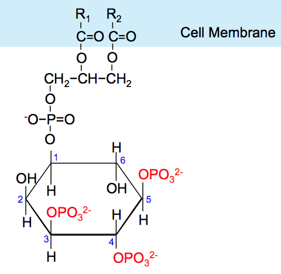

Akt/PKB signaling pathway
The Akt Pathway, or PI3K-Akt Pathway is a signal transduction pathway that promotes survival and growth in response to extracellular signals. Key proteins involved are PI3K (phosphatidylinositol 3-kinase) and Akt (Protein Kinase B). Initial stimulation by one of the growth factors causes activation of a cell surface receptor and phosphorylation of PI3K. Activated PI3K then phosphorylates lipids on the plasma membrane, forming second messenger phosphatidylinositol (3,4,5)-trisphosphate (PIP3). Akt, a serine/threonine kinase, is recruited to the membrane by interaction with these phosphoinositide docking sites, so that it can be fully activated. Activated Akt mediates downstream responses, including cell survival, growth, proliferation, cell migration and angiogenesis, by phosphorylating a range of intracellular proteins. The pathway is present in all cells of higher eukaryotes and is highly conserved. The pathway is highly regulated by multiple mechanisms, often involving cross-talk with other signalling pathways. Problems with PI3K-Akt pathway regulation can lead to increase in signalling activity. This has been linked to a range of diseases such as cancer and type II diabetes. A major antagonist of PI3K activity is PTEN (phosphatase and tensin homolog), a tumour suppressor which is often mutated or lost in cancer cells. Akt phosphorylates as many as 100 different substrates, leading to a wide range of effects on cells.
1.0 Mechanism
1.1 PI3K Activation
There are multiple types of phosphoinositide 3-kinase but only class I are responsible for lipid phosphorylation in response to growth stimuli. Class 1 PI3Ks are heterodimers composed of a regulatory subunit p85 and a catalytic subunit p110, named by their molecular weights.The pathway can be activated by a range of signals, including hormones, growth factors and components of the extracellular matrix (ECM). It is stimulated by binding of an extracellular ligand to a receptor tyrosine kinase (RTK) in the plasma membrane, causing receptor dimerization and cross-phosphorylation of tyrosine residues in the intracellular domains. The regulatory subunit p85 binds to phosphorylated tyrosine residues on the activated receptor via its Src homology 2 (SH2) domain. It then recruits the catalytic subunit p110 to form the fully active PI3K enzyme. Alternatively, adaptor molecule Grb2 binds to phospho-YXN motifs of the RTK and recruits p85 via Grb2-associated binding (GAB) scaffold protein. The p110 subunit can also be recruited independently of p85. For example, Grb2 can also bind the Ras-GEF Sos1, leading to activation of Ras. Ras-GTP then activates the p110 subunit of PI3K. Other adaptor molecules such as insulin receptor substrate (IRS) can also activate p110. PI3K can also be activated by G protein-coupled receptors (GPCR), via G-protein βγ dimers or Ras which bind PI3K directly. In addition, the Gα subunit activates Src-dependent integrin signalling which can activate PI3K.
1.2 Phosphoinositide Formation
Activated PI3K catalyses the addition of phosphate groups to the 3'-OH position the inositol ring of phosphoinositides (PtdIns), producing three lipid products, PI(3)P, PI(3,4)P2 and PI(3,4,5)P3:Phosphatidylinositol (PI) → PI 3-phosphate, (PI(4)P) → PI 3,4-bisphosphate, (PI(4,5)P2) → PI 3,4,5-triphosphateThese phosphorylated lipids are anchored to the plasma membrane, where they can directly bind intracellular proteins containing a pleckstrin homology (PH) or FYVE domain. For example, the triphosphate form (PI(3,4,5)P3) binds Akt and phosphoinositide-dependent kinase 1 (PDK1) so they accumulate in close proximity at the membrane.
1.3 Akt Activation
Akt resides in the cytosol in an inactive conformation, until the cell is stimulated and it translocates to the plasma membrane. The Akt PH domain has a high affinity for second messenger PI(3,4,5)P3, binding to it preferentially over other phosphoinositides. Thus PI3K activity is essential for translocation of Akt to the membrane. Interaction with PI(3,4,5)P3 causes conformational changes and exposure of phosphorylation sites Thr308 in the kinase domain and Ser473 in the C-terminal domain. Akt is partially activated by phosphorylation of T308 by PDK1. Full activation requires phosphorylation of S473, which can be catalysed by multiple proteins, including phosphoinositide-dependent kinase 2 (PDK2), integrin-linked kinase (ILK), mechanistic target of rapamycin complex (mTORC) and DNA-dependent protein kinase (DNA-PK). The regulation of Ser473 phosphorylation is not fully understood but may also be influenced by autophosphorylation after Thr308 phosphorylation. After stimulation, the levels of PIP3 decrease and Akt activity is attenuated by dephosphorylation by serine/threonine phosphatases.
1.4 PI3K-Independent Activation.
Although PI3K is the major mode of Akt activation, other tyrosine or serine/threonine kinases have been shown to activate Akt directly, in response to growth factors, inflammation or DNA damage. These can function even when PI3K activity is inhibited. Other studies have shown Akt can be activated in response to heat shock or increases in cellular Ca2+ concentration, via Ca2+/Calmodulin-dependent protein kinase kinase (CAMKK).
Activating Kinase |
Akt Phosphorylation Site |
Details |
Tyr176 |
Akt binds preferentially to phosphatidic acid (PA) instead of PIP3 allowing translocation to the plasma membrane. |
|
Tyr315, Tyr326 |
Requires interaction of the Src SH3 domain and proline-rich region at the C-terminal of Akt. |
|
Protein tyrosine kinase 6 (PTK6) |
Tyr215, Tyr315 and Tyr326 |
Activates Akt in response to epidermal growth factor (EGF) |
IκB kinase ε (IKKε) |
Ser137, Thr308 and Ser473 |
Independent of the PH domain, PI3K, PDK1 and mTOR |
TANK-binding kinase 1 (TBK1) |
Thr195, Ser378 and Ser473 |
In response to Toll-like receptor activation in macrophages. |
DNA-dependent protein kinase (DNA-PK) |
Ser473 |
Activated by double-strand DNA breaks formed by ionizing radiation. |
2.0 Regulation
The PI3K-Akt pathway has many downstream effects and must be carefully regulated. One of the ways the pathway is negatively regulated is by reducing PIP3 levels. Phosphatase and tensin homolog (PTEN) antagonises PI3K by converting PI(3,4,5)P3 into PI(4,5)P2. Loss of PTEN function leads to over-activation of Akt and is common in cancer cells (PTEN is a tumour suppressor). SH2-containing Inositol Phosphatase (SHIP) also dephosphorylates PI(3,4,5)P3, at the 5' position of the inositol ring.[22] The PI3K-Akt pathway regulates PTEN levels by affecting its transcription and activity. Transcription factor NF-κB, activated by Akt, regulates peroxisome proliferator-activated receptor delta (PPARβ/δ) agonists and tumour necrosis factor α (TNFα), which in turn repress PTEN expression. NEDD4-1, an E3 ligase that recognises PTEN for degradation is up-regulated by the PI3K pathway. Therefore, when Akt is activated, PTEN is further repressed in a positive feedback loop. The pathway is also controlled by protein phosphatase 2A (PP2A), which dephosphorylates Akt at Thr308 and phosphatase PHLPP dephosphorylates Akt at Ser473. Another protein important in Akt attenuation is Carboxy Terminal Modulator Protein (CTMP). CTMP binds to the regulatory domain of Akt, blocking its phosphorylation and activation. When the pathway is activated by insulin, insulin receptor substrate 1 (IRS-1) transcription is down-regulated, in a negative feedback loop via mTORC1 and S6K1 activation. S6K1 is also able to phosphorylate IRS-1 at multiple serine residues, preventing binding to RTKs. Another negative feedback control mechanism regulating the pathway involves FoxO transcription factors. Activated Akt causes FoxO degradation, so it can no longer inhibit PP2A, thus leading to a decrease in Akt phosphorylation.
3.0 Downstream Effects
Once active, Akt translocates from the plasma membrane to the cytosol and nucleus, where many of its substrates reside. Akt regulates a wide range of proteins by phosphorylation. Akt target substrates contain a minimum consensus sequence R-X-R-X-X-[Ser/Thr]-Hyd, where Hyd is a hydrophobic amino acid, although other factors such as sub-cellular localisation and 3-dimensional structure are important. Phosphorylation by Akt can be inhibitory or stimulatory, either suppressing or enhancing the activity of target proteins.
3.1 Cell Survival and Apoptosis
 The Akt-PI3K pathway is essential for cell survival as activated Akt influences many factors involved in apoptosis, either by transcription regulation or direct phosphorylation. In the nucleus, Akt inhibits transcription factors that promote the expression of cell death genes, and enhances transcription of anti-apoptotic genes. A well studied example is the Forkhead family transcription factors (FoxO/FH), of which FKHR/FoxO1, FKHRL1/FoxO3 and AFX/FoxO4 are directly phosphorylated by Akt. This phosphorylation induces export to the cytosol where they are sequestered by 14-3-3 proteins and eventually undergo degradation via the ubiquitin-proteasome pathway. Akt also positively regulates some transcription factors to allow expression of pro-survival genes. Akt can phosphorylate and activate the IκB kinase IKKα, causing degradation of IκB and nuclear translocation of NF-κB where it promotes expression of caspase inhibitors, c-Myb and Bcl-xL. Also promoting cell survival, cAMP response element binding protein (CREB) is phosphorylated by Akt at Ser133, stimulating recruitment of CREB-binding protein (CBP) to the promoter of target genes, such as Bcl-2. Akt has also been shown to phosphorylate murine double minute 2 (Mdm2), a key regulator of DNA damage responses, at Ser166 and Ser186. Phosphorylation of Mdm2 by Akt upregulates its ubiquitin-ligase activity, therefore indirectly suppressing p53-mediated apoptosis. Another target of Akt is the Yes-associated protein (YAP), phosphorylated at Ser127 leading to 14-3-3 binding and cytosolic localisation. Therefore, it cannot co-activate p73-mediated apoptosis in response to DNA damage. Akt negatively regulates pro-apoptotic proteins by direct phosphorylation. For example, phosphorylation of BAD, the Bcl-2 family member, on Ser136 causes translocation from the mitochondrial membrane to the cytosol, where it is sequestered by 14-3-3 proteins. Akt phosphorylates Caspase-9 on Ser196, preventing a caspase cascade leading to cell death. Akt also phosphorylates MAP kinase kinase kinases (MAPKKK) upstream of the stress-activated protein kinase (SAPK) pathway. Phosphorylation of apoptosis signal-regulating kinase 1 (ASK1) on Ser83 and mixed lineage kinase 3 (MLK3) on Ser674 inhibits their activity and prevents MAP kinase induced apoptosis.
The Akt-PI3K pathway is essential for cell survival as activated Akt influences many factors involved in apoptosis, either by transcription regulation or direct phosphorylation. In the nucleus, Akt inhibits transcription factors that promote the expression of cell death genes, and enhances transcription of anti-apoptotic genes. A well studied example is the Forkhead family transcription factors (FoxO/FH), of which FKHR/FoxO1, FKHRL1/FoxO3 and AFX/FoxO4 are directly phosphorylated by Akt. This phosphorylation induces export to the cytosol where they are sequestered by 14-3-3 proteins and eventually undergo degradation via the ubiquitin-proteasome pathway. Akt also positively regulates some transcription factors to allow expression of pro-survival genes. Akt can phosphorylate and activate the IκB kinase IKKα, causing degradation of IκB and nuclear translocation of NF-κB where it promotes expression of caspase inhibitors, c-Myb and Bcl-xL. Also promoting cell survival, cAMP response element binding protein (CREB) is phosphorylated by Akt at Ser133, stimulating recruitment of CREB-binding protein (CBP) to the promoter of target genes, such as Bcl-2. Akt has also been shown to phosphorylate murine double minute 2 (Mdm2), a key regulator of DNA damage responses, at Ser166 and Ser186. Phosphorylation of Mdm2 by Akt upregulates its ubiquitin-ligase activity, therefore indirectly suppressing p53-mediated apoptosis. Another target of Akt is the Yes-associated protein (YAP), phosphorylated at Ser127 leading to 14-3-3 binding and cytosolic localisation. Therefore, it cannot co-activate p73-mediated apoptosis in response to DNA damage. Akt negatively regulates pro-apoptotic proteins by direct phosphorylation. For example, phosphorylation of BAD, the Bcl-2 family member, on Ser136 causes translocation from the mitochondrial membrane to the cytosol, where it is sequestered by 14-3-3 proteins. Akt phosphorylates Caspase-9 on Ser196, preventing a caspase cascade leading to cell death. Akt also phosphorylates MAP kinase kinase kinases (MAPKKK) upstream of the stress-activated protein kinase (SAPK) pathway. Phosphorylation of apoptosis signal-regulating kinase 1 (ASK1) on Ser83 and mixed lineage kinase 3 (MLK3) on Ser674 inhibits their activity and prevents MAP kinase induced apoptosis.
3.2 Lysosome biogenesis and autophagy
Akt regulates TFEB, a master controller of lysosomal biogenesis, by direct phosphorylation of TFEB at serine 467. Phosphorylated TFEB is excluded from the nucleus and less active. Pharmacological inhibition of Akt promotes nuclear translocation of TFEB, lysosomal biogenesis and autophagy.
3.3 Cell Cycle Progression
 Akt promotes G1-S phase cell cycle progression by phosphorylating and inactivating glycogen synthase kinase 3 (GSK-3) at Ser9. This prevents the phosphorylation and degradation of cyclin D1. Therefore, Akt promotes G1 phase progression in a positive feedback loop. Akt promotes cyclin D1 translation via indirect activation of mTOR. mTOR increases translation of cyclin D1 by activating ribosomal protein S6K, and inhibiting eukaryotic translation initiation factor 4E-binding protein (4E-BP), thus increasing eIF4e activity. Akt both indirectly and directly regulates cyclin-dependent kinase (CDK) inhibitors p21Cip1 and p27Kip1 , allowing cell cycle progression. Akt phosphorylates p27kip1 at Thr157, preventing its nuclear import. In addition, Akt phosphorylates Thr145 and Ser146 of p21Cip1, preventing PCNA binding and decreasing stability. Akt phosphorylation of Foxo transcription factors also affects the cell cycle, as inhibitory phosphorylation of FoxO4 (also named AFX) prevents p27 gene expression.
Akt promotes G1-S phase cell cycle progression by phosphorylating and inactivating glycogen synthase kinase 3 (GSK-3) at Ser9. This prevents the phosphorylation and degradation of cyclin D1. Therefore, Akt promotes G1 phase progression in a positive feedback loop. Akt promotes cyclin D1 translation via indirect activation of mTOR. mTOR increases translation of cyclin D1 by activating ribosomal protein S6K, and inhibiting eukaryotic translation initiation factor 4E-binding protein (4E-BP), thus increasing eIF4e activity. Akt both indirectly and directly regulates cyclin-dependent kinase (CDK) inhibitors p21Cip1 and p27Kip1 , allowing cell cycle progression. Akt phosphorylates p27kip1 at Thr157, preventing its nuclear import. In addition, Akt phosphorylates Thr145 and Ser146 of p21Cip1, preventing PCNA binding and decreasing stability. Akt phosphorylation of Foxo transcription factors also affects the cell cycle, as inhibitory phosphorylation of FoxO4 (also named AFX) prevents p27 gene expression.
3.4 Cell Migration
Akt phosphorylates many proteins involved in polymerisation and stabilisation of the actin cytoskeleton. In normal cells, this can either increase the stability of cytoskeleton components or promote migration via remodelling. Examples are listed below:
- Actin filaments - Akt phosphorylates actin directly
- Akt phosphorylation enhancer (APE), also named girdin - phosphorylated at Ser1416 causing translocation to the leading edge of filaments, essential for migration
- Sodium-hydrogen exchanger 1 (NHE1) - phosphorylated at Ser648, promoting cytoskeletal rearrangements and migration
- Filamin A - phosphorylated at Ser2152, promoting caveolin-1 mediated cell migration
- Kank - kidney ankyrin repeat-containing protein - negatively regulating RhoA activation and cell migration in response to insulin and EGF
- Tuberous sclerosis complex 2 (TSC2) - Akt1 destabilises the Rho GTPase, inhibits F-actin assembly and reduces cell migration
- Palladin-Akt1 phosphorylates the actin-binding protein at Ser507, disrupting cross-linking of F-actin bundles
4.1 Angiogenesis
Angiogenesis, the formation of new blood vessels, is often critical for tumour cells to survive and grow in nutrient-depleted conditions. Akt is activated downstream of vascular endothelial growth factor (VEGF) in endothelial cells in the lining of blood vessels, promoting survival and growth. Akt also contributes to angiogenesis by activating endothelial nitric oxide synthase (eNOS), which increases production of nitric oxide (NO). This stimulates vasodilation and vascular remodelling. Signalling through the PI3K-Akt pathway increases translation of hypoxia-inducible factor α (HIF1α and HIF2α) transcription factors via mTOR. HIF promotes gene expression of VEGF and glycolytic enzymes, allowing metabolism in oxygen-depleted environments.
4.2 Glucose Metabolism
In cancer cells, an increase in Akt signalling correlates with an increase in glucose metabolism, compared to normal cells. Cancer cells favour glycolysis for energy production over mitochondrial oxidative phosphorylation, even when oxygen supply is not limited. This is known as the Warburg effect, or aerobic glycolysis. Akt affects glucose metabolism by increasing translocation of glucose transporters GLUT1 and GLUT4 to the plasma membrane, increasing hexokinase expression and phosphorylating GSK3 which stimulates glycogen synthesis. It also activates glycolysis enzymes indirectly, via HIF transcription factors and phosphorylation of phosphofructokinase-2 (PFK2) which activates phosphofructokinase-1 (PFK1).